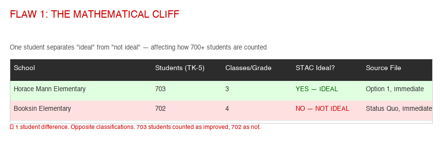
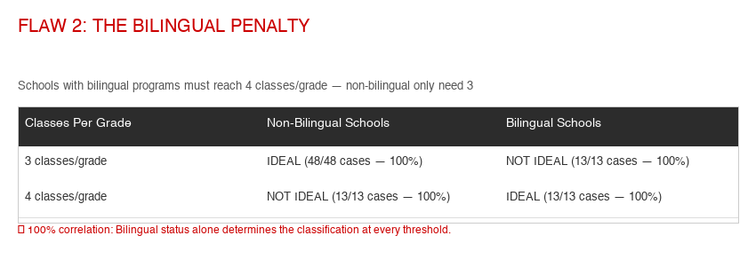
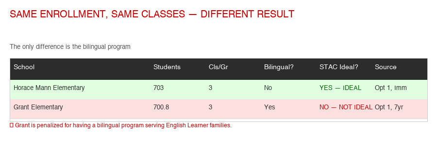
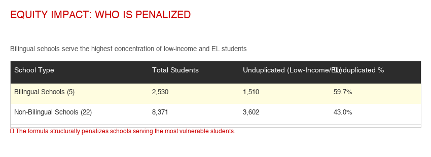
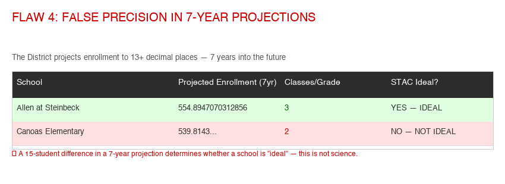

역설: 더 많은 돈, 더 적은 학생, 학교 폐교
San José Unified는 일반 기금 세입 $476M 및 $504M으로 각각 $25.7M(2022–23) 및 $18.9M(2023–24)의 건전한 흑자를 기록했습니다. 그런데 2024–25년에는 세입 $462M만 예상하면서 지출은 $492M으로 책정했습니다 — 3천만 달러 적자 예산입니다. 이는 2년간 $49M의 급변입니다. 지난 10년간 등록 학생 수는 6,000명 이상 감소했으며, 이는 20% 하락입니다. 학생당 역대 가장 많은 예산을 보유하고 있음에도 교육구는 최대 9개 초등학교를 폐교해야 한다고 말합니다.
이 웹사이트는 공개된 재정 데이터를 분석하여 학부모, 교사, 납세자 및 지역사회 구성원인 여러분이 돈이 어디서 오고, 어디로 가며, 학교 폐교가 정말 유일한 선택인지 이해할 수 있도록 합니다.
세입: 돈은 어디서 오는가?
숫자를 살펴보기 전에, 캘리포니아 교육구가 어떻게 자금을 확보하는지 이해하는 것이 도움이 됩니다. "정부가 학교에 돈을 준다"는 것처럼 단순하지 않습니다. 다양한 자금 흐름, 복잡한 공식, 그리고 SJUSD를 대부분의 교육구와 다르게 만드는 핵심적인 차이가 있습니다.
돈이 학교로 흘러가는 과정
SJUSD의 실제 자금 출처 (2024–25)
$462M 일반 기금 예산이 출처별로 어떻게 나뉘는지 보여줍니다. 재산세가 얼마나 큰 비중을 차지하는지 주목하세요 — 파란색 부분 하나가 1달러당 85센트입니다.
$390.9M
$46.6M
$14.1M
$10.5M (보조금, 토지세)
핵심 공식: LCFF (지역 통제 자금 배분 공식)
2013년부터 캘리포니아는 LCFF를 통해 학교에 자금을 지원합니다. 간단히 말하면: 주 정부가 모든 교육구에 대해 학생당 자금 목표를 계산한 후, 교육구가 이미 지역 재산세로 얼마를 징수하는지 확인합니다. 부족분이 있으면 주 정부가 채워줍니다.
SJUSD는 2020–21년에 Basic Aid 교육구가 되었습니다. 전국 최고 수준의 주택 가격을 자랑하는 실리콘 밸리에서 재산세 수입은 막대합니다. 이는 SJUSD의 자금이 학생 수가 아닌 부동산 가치에 연결되어 있다는 뜻입니다. 가족이 교육구를 떠나도 돈은 함께 빠져나가지 않습니다. 캘리포니아 교육구의 약 10%가 이 지위를 보유합니다.
이것이 제기하는 질문: 학생 감소가 자금 감소를 의미하지 않는다면, 왜 교육구는 학교 폐교가 필요한 재정 위기를 주장하는 것일까요?
10년간 세입 추이 (일반 기금)
아래 표는 등록 학생 수가 감소하는 중에도 SJUSD의 재정 상태가 해마다 어떻게 성장했는지 보여줍니다. 중요 참고: NCES가 보고한 2021–22년 $532M 수치는 자본 기금과 특별 기금을 포함한 전체 기금 총 세입이며, 일반 기금만의 수치가 아닙니다. 2024–25년 데이터는 SJUSD가 CDE에 제출한 자체 LCAP 예산 개요에서 가져온 것으로, 일반 기금 수치 $462M입니다.
| 회계연도 | 총 세입 | 전년 대비 | 등록 학생 수 | 출처 |
|---|---|---|---|---|
| 2014–15 | $321M | — | ~30,800 | SVTA / Ed-Data |
| 2015–16 | $337M | +5.0% | ~31,000 | Ed-Data (est.) |
| 2016–17 | $355M | +5.3% | ~30,700 | Ed-Data (est.) |
| 2017–18 | $370M | +4.2% | ~30,500 | Ed-Data (est.) |
| 2018–19 | $385M | +4.1% | ~29,600 | Ed-Data (est.) |
| 2019–20 | $397M | +3.1% | ~28,800 | Ed-Data (est.) |
| 2020–21 ★ | $430M | +8.3% | ~26,300 | Ed-Data (est.) |
| 2021–22 | $532M ★★ | +23.7% | ~25,700 | NCES CCD (all-funds) |
| 2022–23 | $476M (GF) | −10.5% | 25,451 | CDE SACS Unaudited Actuals |
| 2023–24 | $504M (GF) | +5.7% | 25,976 | CDE SACS Unaudited Actuals |
| 2024–25 ④ | $462M (GF) | — | 25,409 | SJUSD LCAP Budget Overview (CDE) |
★ SJUSD가 Basic Aid (지역 자금 조달) 교육구가 됨. 파란색 음영 행은 상당한 연방 ESSER 구호 자금을 포함.
★★ $532M은 NCES가 확인한 2021–22 회계연도 전체 기금 총 세입. 일반 기금 세입만으로는 더 낮음.
③ 2022–23 일반기금 실적: 세입 $476.4M, 지출 $443.0M — $25.7M 흑자. 2023–24 일반기금 실적: 세입 $503.6M, 지출 $476.9M — $18.9M 흑자. 모두 CDE SACS Data Viewer, 미감사 실적 (viewer.sacs-cde.org) 기반.
④ 2024–25 일반기금 세입: $462,171,756 — SJUSD가 CDE에 제출한 공식 LCAP 예산 개요 (PDF). 내역: LCFF $390.9M (85%), 기타 주 $46.6M (10%), 지역 $10.5M (2%), 연방 $14.1M (3%). 예산 지출: $492,473,846 — $30.3M 적자 예산.
⑤ 추세: 흑자가 $25.7M (2022–23) → $18.9M (2023–24) → 으로 줄어들더니 2024–25년에는 $30.3M 적자를 예산에 반영 — 2년간 $49M 급변. 세입은 $41M 감소했지만 지출은 거의 변동 없음.
관련 지출 데이터 (Mercury News 사설, 2025년 3월): 지출이 $366M (2019–20)에서 $492M (2023–24)으로 증가 — 5년간 34% 증가, 같은 기간 등록 학생 수는 13% 감소, 인플레이션은 20–22% 상승.
SJUSD의 일반기금 세입은 10년 전 $321M에서 2023–24년 $504M으로 최고치를 기록했으며, 이는 약 5,400명의 학생이 줄어든 상황에서 이루어졌습니다. 교육구는 $25.7M (2022–23) 및 $18.9M (2023–24)의 건전한 흑자를 기록했습니다. 그런데 2024–25년에는 세입이 $41M 감소하여 $462M이 되었지만 지출은 거의 변하지 않아 — $30.3M 적자 예산이 발생했습니다. 이는 2년간 $49M의 급변입니다. 돈은 어디로 갔을까요?
지출: 돈은 어디로 가는가?
Mercury News 사설 위원회(2025년 3월)에 따르면, SJUSD 지출은 2019–20년 $366M에서 2023–24년 $492M으로 증가했습니다 — 불과 5년 만에 34% 증가. 같은 기간 등록 학생 수는 13% 감소했습니다. 교육구 직원 수는 오히려 0.4% 증가했습니다.
모든 달러의 행방
SJUSD가 $462M을 받으면 이렇게 나뉩니다. 가정 예산을 생각해 보세요 — 단, 5억 달러 규모이고 25,000명의 아이들이 의존하고 있습니다.
1달러당 약 75센트가 인건비 — 급여와 복리후생에 사용됩니다. 이는 교육구에서 정상적인 수준입니다. 하지만 비용이 상승하면(연금 요율, 건강보험료, 협상된 임금 인상) 빠르게 상승하며 — 직원을 줄이지 않으면 삭감할 여지가 거의 없습니다. 문제는 31,000명을 위해 설계된 SJUSD의 인력 수준이 25,000명 학생에게 적합한지 여부입니다.
U.S. News Education에 따르면, SJUSD는 연간 학생당 약 $16,520을 지출합니다. 주요 지출 범주는 대략 다음과 같이 나뉩니다:
직원 복리후생비 폭증
주요 비용 상승 요인 중 하나는 직원 복리후생 — 연금(CalSTRS, CalPERS), 퇴직자 의료비 및 기타 수당입니다. 2017년 David Crane의 분석에 따르면 SJUSD의 직원 복리후생비는 2013–14년 $58.6M에서 2014–15년 $70M으로 증가했으며 — 단 1년 만에 19% 급증했습니다. 2019–20년까지 복리후생비는 교육구 전체 세입의 25%를 소비할 것으로 예상되었습니다.
2025년, 세 노조(SJTA, CSEA, AFSCME)는 SJUSD가 2017–18년 이후 직원 건강 및 복지 수당을 3천만 달러 이상 부족하게 지급했다고 비난했습니다. 노조에 따르면, 교육구는 복리후생 기여금을 계산할 때 승인된 직원 정원 수 대신 실제 채용된 인원 수만 사용하도록 조용히 전환했으며 — 이로 인해 수백만 달러가 직원 건강복지기금에 도달하지 못했습니다. SJUSD 최고재무책임자 Seth Reddy는 문제를 인정하고 교육구가 "이를 바로잡기 위해 노력하고 있다"고 말했습니다.
🚨 적립금 위기: SJUSD의 빈 안전망
캘리포니아 법은 모든 교육구에 최소한의 "경제적 불확실성 적립금" — 본질적으로 비상 자금을 유지하도록 요구합니다. SJUSD 규모(ADA 1,000명 이상)의 교육구에 대한 주 권장 최소치는 총 지출의 2%입니다. 이는 캘리포니아 규정집 Title 5에 명시되어 있으며 카운티 교육청이 모니터링합니다.
교육구가 주에 제출한 자체 자료를 기반으로 SJUSD의 현황은 다음과 같습니다:
SJUSD의 2023–24년 총 기말 기금 잔액은 $109,367,369입니다. 하지만 그 중 $104.2M은 제한 자금입니다 — 특정 프로그램에 법적으로 지정되어 일반 운영에 사용할 수 없습니다. 비제한 자금은 $5.2M에 불과하며, 그 중 $3.8M은 특정 목적에 배정, $0.1M은 비지출성으로, 미배정 $1.27M만 남습니다. 경제적 불확실성 적립금 항목(Object Code 9789)은 $0입니다.
제한 자금 $104.2M에는: 기타 제한 지역 자금 $48.1M, 학습 회복 긴급 보조금 $21.5M, 예술/음악 보조금 $15.1M, 확장 학습 $7.0M, 유지보수 계좌 $3.6M이 포함됩니다. 이 중 어느 것도 운영 적자를 메우는 데 전용할 수 없습니다.
이는 SJUSD가 최소 2년 연속 주 권장 최소 적립금 이하로 운영되어 왔음을 의미합니다. 카운티 교육청은 이를 경고해야 합니다. 2024–25년에 $30.3M 적자를 운영하면서 사실상 비제한 적립금이 없는 교육구는 심각한 재정 위기에 처해 있습니다.
비감사 실적 보고서는 적자를 설명하는 직원 복리후생 비용의 대폭 증가를 보여줍니다:
건강·복지 혜택만 1년 만에 $1,190만 증가 — 25.2% 상승. 총 직원 복리후생은 $124.4M에서 $136.7M으로 (+9.9%) 증가했습니다. 이는 노조가 주장한 2017–18년 이후 $30M 이상의 복리후생 미적립과 일치합니다. 질문은: 왜 이 비용을 계획하지 않았으며, 왜 학교 폐교가 해결책인가?
관리직 급여: 누가 얼마를 받는가
SACS 데이터를 통해 모든 급여 달러가 정확히 어디로 가는지 분석할 수 있습니다. 2023–24년, SJUSD 일반기금은 급여에 $247.5M, 복리후생에 $124.4M을 지출했으며 — 인건비만으로 총 $371.8M, 즉 전체 지출의 78%입니다.
SJUSD는 관리 페이지에 13명의 고위 리더를 나열하고 있으며, 교육감 Nancy Albarrán이 이끌고 있습니다(2016년부터 재임). 팀에는 최고재무책임자, 부교육감, 교육감보, 그리고 재정에서 데이터 전략, 홍보까지 모든 것을 감독하는 9명의 디렉터가 포함됩니다.
SACS 데이터와 NCES 인원 수를 기준으로, 평균 관리자 급여(공인 + 일반, 99.5개 직위)는 약 연 $215,000입니다. 평균 교사 급여(1,189 FTE)는 약 연 $120,400입니다. Albarrán 교육감의 총 보수는 2020년 $367,302(가장 최근 공개 데이터)이며 — 이후 증가했을 가능성이 높습니다.
SJUSD는 25,000명의 학생을 위해 교육구 수준 관리자 23명과 학교 수준 관리자 76.5명을 고용하고 있습니다. 이는 학생 251명당 관리자 1명 비율입니다. 관리자 급여 합계는 연간 $21.4M입니다. 한편 교육구는 돈을 절약하기 위해 동네 초등학교를 폐교해야 한다고 말합니다. 학교를 폐교하는 대신 — 또는 추가로 — 관리자 인원을 10–15% 줄이면 교육구는 얼마를 절약할 수 있을까요?
지출 2019–20
약 28,800명 학생
지출 2024–25 (예산)
Revenue: $462M
$30.3M deficit budget
등록 학생 수: 줄어드는 학생 수
교육구의 등록 학생 수는 꾸준한 하향 추세에 있습니다. 2008년 SJUSD는 약 35,000명의 학생을 교육했습니다. 2017–18년에는 약 30,500명으로 감소했습니다. 현재(2024–25), 등록 학생 수는 약 25,409명이며 — 2008년 이후 약 10,000명, 2017–18년 이후 6,000명 이상 감소했습니다.
교육구는 이를 실리콘 밸리의 높은 생활비로 인한 가족 유출, 출생률 감소, 차터 스쿨 및 사립학교 대안의 증가에 기인한다고 봅니다. San Francisco Chronicle에 따르면 SJUSD는 2019–20년부터 2021–22년까지 베이 에이리어 10대 교육구 중 가장 큰 등록 학생 수 감소를 기록했습니다: 11% 하락.
결정적으로, 등록 학생 수가 20% 감소했음에도 교육구는 올해 폐교 제안까지 같은 수의 초등학교(26개)를 유지했습니다. 26개 초등학교 중 절반이 현재 350명 미만의 학생을 교육하고 있습니다. 가장 작은 학교는 200명 미만입니다.
학생당 지출: 학생 한 명당 더 많은 돈
여기서 수학이 정말 흥미로워집니다. 세입은 계속 증가하는데 등록 학생 수는 계속 감소하기 때문에, 학생당 사용 가능한 금액이 급증했습니다.
2014–15년에 교육구는 학생당 약 $10,420을 보유했습니다. 2023–24년까지 이 수치는 학생당 ~$19,390으로 상승했습니다 — 거의 두 배. 통합 교육구의 주 전체 평균은 학생당 약 $18,400입니다. 2024–25년 예산 감소에도 SJUSD는 여전히 학생당 ~$18,190을 지출합니다. 교육구가 학생당 역대 가장 많은 돈을 보유하고 있다면, 왜 학교를 폐교해야 할까요?
연방 구호 자금: ESSER 및 기타 보조금
2020년에서 2024년 사이, 전례 없는 연방 자금이 COVID-19 팬데믹을 극복하기 위해 미국 전역의 교육구로 유입되었습니다. 이 자금은 초등 및 중등학교 긴급 구호 기금(ESSER)을 통해 세 차례에 걸쳐 배분되었습니다.
| 차수 | 연방법 | 날짜 | 전국 합계 | 캘리포니아 합계 | 마감일 |
|---|---|---|---|---|---|
| ESSER I | CARES Act | Mar 2020 | $13.2B | ~$1.6B | Sep 2022 |
| ESSER II | CRRSA Act | Dec 2020 | $54.3B | ~$6.7B | Sep 2023 |
| ESSER III | ARP Act | Mar 2021 | $122.8B | ~$13.5B | Sep 2024 |
| Total | $190.3B | ~$23.4B |
캘리포니아는 총 약 $23.4B의 ESSER 자금을 받았으며 — 전국 최대 규모입니다. 이 자금은 Title I (저소득 학생) 배분을 기준으로 교육구에 배분되었습니다. SJUSD도 해당 몫을 받았으며, 2020–2024년 동안 교육구의 연방 세입 항목이 크게 증가했습니다.
ESSER 자금은 다음 용도로 사용되어야 했습니다: COVID 확산 방지(PPE, 환기, 청소), 학교 폐쇄로 인한 학습 손실 해소, 정신건강 서비스, 원격 학습용 기술, 인력 수준 유지, 여름/방과후 프로그램. ESSER III는 특히 학습 손실 해소를 위한 근거 기반 프로그램에 자금의 최소 20%를 사용하도록 요구했습니다.
모든 ESSER 자금은 2024년 9월 30일까지 사용해야 했습니다. 이 "재정 절벽"은 ESSER 자금을 지속적인 비용 — 예를 들어 신규 직원 채용 — 에 사용한 교육구가 이제 자금 공백에 직면한다는 뜻입니다. Franklin-McKinley 학구 교육위원회 위원장 George Sanchez는 더 넓은 영향에 대해 이렇게 말했습니다: "자금이 학교 교육과정을 크게 좌우합니다... 학교들은 COVID-19 팬데믹 최고조 시기처럼 연방 자금을 받지 못하고 있습니다."
기타 주요 자금 출처
2016년 유권자 승인으로, 이 연간 $72 토지세는 8년간 약 $5M을 매년 창출했습니다. 교사 유지, 학업 프로그램, 직원 급여에 사용되었습니다. 2025년 6월 30일에 만료되었습니다. 교육구는 2025년 5월 특별선거에서 Measure A로 갱신을 시도했지만, 유권자들이 부결시켰습니다. 선거 자체에 교육구는 $2–3M의 비용이 들었습니다.
학교 시설을 수리하고 개선하기 위해 2012년에 승인된 일반의무채권 — 교실, 과학 실험실, 기술, 안전, 에너지 시스템. 이 자금은 운영이나 급여에 사용할 수 없으며, 건물과 인프라에만 사용됩니다.
2024년 11월 유권자의 64.7%가 승인한 이 대규모 채권은 납세자에게 약 30년간 연간 약 $81M의 비용을 부과합니다 (주택 평가가치 $100,000당 $60). 시설 개선, 직원 주택 건설(600세대 이상 계획), 교실 현대화에 자금을 지원합니다. SPUR은 교육구가 투표에 상정하기 전에 지출 계획을 공개하지 않았다고 지적했습니다.
Santa Clara County 학교들은 2023–24년 2분기에만 약 $20.9M의 복권 기금을 받았으며, 1985년 이후 누적 합계는 거의 $1.9B에 달합니다. 복권 기금은 정규 자금을 대체하는 것이 아니라 보충하기 위한 것입니다.
SJUSD는 교육구 경계 내 신규 주거 및 상업용 건설에 개발 부담금을 부과합니다. 이 부담금은 별도 계좌에 보관되며 신규 개발로 인한 새로운 학생 수용 비용을 상쇄하기 위한 것입니다.
채권 & 토지세: 유권자가 승인한 것들
지난 25년간 SJUSD 유권자들은 다수의 채권 법안과 토지세를 승인했습니다. 주요 항목의 요약입니다:
합산하면, SJUSD 유권자들은 2002년 이후 거의 $1.87B의 채권 부채를 승인했으며 — 여기에 지속적인 토지세가 추가됩니다. 2024년 Measure R만으로도 납세자에게 30년간 이자를 포함하여 약 $2.4B의 비용이 발생합니다. 한편 교육구는 연간 수억 달러의 재산세 수입, 주 자금, 연방 팬데믹 구호금도 받고 있었습니다. Measure R 반대자 한 명은 이렇게 말했습니다: "2012년에 수리를 위해 $290M을 승인했는데... 교육구가 이제 추가로 $1.15B를 요청합니다."
학교 폐교: "미래의 학교" 계획
2025년 9월, SJUSD 교육위원회는 "Schools of Tomorrow"(미래의 학교) 이니셔티브를 시작했습니다 — 초등학교의 통합, 폐교 또는 학군 경계 변경 가능성을 평가하는 과정입니다. 교육구는 처음에 2026–27학년도 전에 최대 9개 초등학교를 폐교하거나 통합하는 세 가지 옵션을 발표했습니다. 2026년 2월 10일, STIC는 옵션 3을 폐기하고 추가 검토를 위해 세 가지 새로운 옵션(4, 5, 7)을 추가했습니다. 위원회는 2026년 3월 3일까지 교육위원회에 최종 권고안을 제출할 예정입니다.
교육구가 밝힌 이유: 2017–18년 이후 등록 학생 수 20% 감소(약 6,000명 감소); 26개 초등학교 중 12개가 현재 350명 미만의 학생(몇 년 전의 두 배); 가장 작은 학교는 200명 미만; 소규모 학교는 상담사, 간호사, 미술/음악 프로그램을 유지하거나 혼합 학급을 피할 수 없음.
교육구의 약속
SJUSD는 영향을 받는 학교가 전환 연도 동안 통상 자금의 두 배를 받을 것이라고 말합니다. 새 학생을 받는 학교도 이중 자금을 받게 됩니다. 새 학교에서 1.5마일 이상 떨어진 학생에게는 버스 서비스가 제공됩니다. 3시간의 무료 방과후 활동이 제공됩니다. 직원 직위는 유지됩니다.
학부모들의 목소리
학부모와 지역사회 구성원들이 강하게 반발하고 있습니다. 많은 사람들이 폐교 대상 학교 중 일부가 우수한 성적을 내고 수요가 높은 동네 학교라고 지적합니다. 한 학부모가 Simonds Elementary에 대해 교육위원회에 쓴 글: "적절한 규모이고, 학업 성적이 우수하며, 프로그램이 풍부한 학교를 폐교하는 것은 교육구가 제시한 기본 틀과 직접적으로 모순됩니다."
2026년 2월 10일 STIC 회의: 변경 사항
2월 10일 회의에서 Schools of Tomorrow 이행 위원회는 중요한 조치를 취했습니다:
옵션 3이 폐기되었습니다 — 위원회는 검토 대상에서 제외하기로 투표했습니다.
세 가지 새로운 옵션이 추가되었습니다:
- 옵션 4: 옵션 1과 2를 결합합니다. 교통 안전 지표(8.4, 7.8.4a, 7.8.4b)를 상향 조정합니다. 지난 7년간 이미 이전된 SDC 프로그램을 보호합니다. 기준 1(이상적인 학교 규모)을 우선순위로 유지합니다.
- 옵션 5: 모든 폐교 시 학생들이 함께 이동하고 SDC 프로그램이 학생들과 함께 유지되도록 요구합니다. Pre-K를 일반 학생과 동일하게 취급합니다.
- 옵션 7: 7년 예측 지표보다 즉각적인 채택 지표를 우선시합니다. 1차 기준에 초점을 맞춥니다.
옵션 6은 부결되었습니다 — SDC 학생을 함께 유지하되 SDC 유아원은 제외하자는 동의안은 통과되지 않았습니다.
2월 24일: 새로운 옵션과 전체 메트릭 발표. ✓
3월 3일: 최종 논의. STIC가 교육위원회에 권고할 옵션을 결정합니다.
3월 5일: 3월 3일에 권고안이 도출되지 않을 경우 예비 날짜.
3월 12일: 교육위원회 학교 폐교 투표. 855 Lenzen Ave, 오후 6:00.
Map: Schools at Risk of Closing
STIC는 2026년 2월 3일에 세 가지 옵션을 발표했습니다. 2월 10일에 옵션 3이 폐기되고 세 가지 새 옵션(4, 5, 7)이 도입되었습니다. 2월 24일에 교육구는 모든 새 옵션의 전체 폐교 목록과 세 가지 하위 옵션(1.2, 2.2, 5.2)을 발표했습니다 — 직원은 옵션 1과 2를 경계 조정 변형으로 대체할 것을 권장합니다.
The district says it needs to close schools because enrollment has dropped. But revenue has increased every single year, and per-pupil funding has roughly doubled in a decade. The district became a Basic Aid district in 2020–21, meaning its revenue is tied to property taxes — not enrollment. It received massive federal ESSER funds. Voters just approved a $1.15 billion bond.
So the question families and taxpayers are asking is: If there's more money per student than ever before, why can't smaller schools be sustained? Where exactly is all this money going?
독립 감사: 교육구의 "이상적인 학교" 공식에 근본적인 결함이 있습니다
교육구가 옵션 1, 2, 3 및 현상 유지(V.i. 메트릭스 계산 — 즉시 및 7년 변형)에 대해 게시한 정확한 메트릭스 스프레드시트를 다운로드하고 폐교 분석의 실제 Excel 수식을 감사했습니다. 또한 11개 기준에 걸쳐 모든 옵션을 비교하는 공식 2월 10일 메트릭스 요약 표를 분석했습니다. 우리가 발견한 것은 매우 우려스럽습니다: 최대 9개 학교 폐교를 정당화하는 데 사용된 방법론에는 신뢰할 수 없는 결과를 생성하는 구조적 결함이 포함되어 있으며 — 교육구의 자체 종합 데이터는 대부분의 지표에서 폐교가 상황을 악화시킨다는 것을 보여줍니다.
결함 1: 이진 분류 — 수학적 절벽
교육구의 주요 지표 — "이상적인 학교에 있는 학생 비율"(지표 1.1) — 은 이진 켜기/끄기 스위치입니다. 학교는 "이상적"이거나 "이상적이지 않음"입니다. 점진적인 개선도, 뉘앙스도, 교육 품질의 실질적인 측정도 없습니다. 스프레드시트 내부의 반올림으로 인한 매우 작은 수치 변화에 따라 라벨이 바뀔 수 있습니다.
실제 스프레드시트 데이터에서:

학급당 3개 반의 Horace Mann은 703명의 학생으로 이상적으로 분류됩니다. 학급당 4개 반의 Booksin은 702명의 학생으로 이상적이지 않음으로 분류됩니다. 단 한 명의 학생이 둘을 구분합니다. 그러나 "이상적인 학교에 있는 학생 비율" 지표에서 Horace Mann의 703명 전원이 "개선됨"으로 집계되는 반면 Booksin의 702명은 0으로 집계됩니다. 이것은 건전한 교육 방법론이 아닙니다 — 이것은 수학적 절벽입니다.
2월 24일 근거 문서 (부록 A, p.13)에서 교육구 자체가 인정합니다: "학생들은 메트릭 1.1, 7.1.1a, 7.1.1b에서 이상적 크기의 학교에 있거나 없는 것으로 점수가 매겨집니다. 즉, 점수에는 이진 구성 요소가 있습니다. 이상적 크기 범위의 하한 또는 상한에 매우 가까운 학교의 등록 인원에서 작은 차이가 때때로 측정 가능한 영향을 미칠 수 있습니다." 이것은 위에서 우리가 식별한 정확한 결함입니다 — 그러나 교육구는 계속해서 이 이진 공식을 모든 폐교 결정의 주요 동인으로 사용합니다.
결함 2: 이중 언어 불이익 — 구조적 차별
우리의 감사에서 모든 옵션과 모든 기간에 걸쳐 100% 일관된 패턴이 발견되었습니다: 이중 언어 프로그램이 있는 학교는 이중 언어 프로그램이 없는 학교보다 더 높은 등록 기준을 충족해야 합니다.

비이중 언어 학교는 학년당 3개 반(약 530명 이상)에서 "이상적"으로 분류됩니다. 이중 언어 학교는 학년당 4개 반(약 780명 이상) — 47% 더 높은 등록 기준에 도달해야 합니다. 이것은 61개 데이터 포인트에 걸친 완벽한 100% 상관관계입니다: 3개 반의 모든 비이중 언어 학교는 "이상적"이고, 3개 반의 모든 이중 언어 학교는 "이상적이지 않음"입니다.

누가 영향을 받습니까? 이중 언어 학교는 교육구에서 가장 취약한 학생들을 대상으로 합니다:

SJUSD의 5개 이중 언어 학교(Gardner, Merritt Trace, Walter L. Bachrodt, Washington, Willow Glen)는 59.7% Unduplicated 비율(저소득, 영어 학습자, 위탁 청소년)의 2,530명의 학생을 대상으로 합니다. 비이중 언어 학교는 평균 43.0%입니다. STAC "이상적" 공식은 가장 많은 지원이 필요한 아이들을 가르치는 이 학교들에게 "이상적"으로 간주되기 위해 더 높은 등록 기준에 도달하도록 강제합니다. 이것은 스프레드시트에 내장된 구조적 차별입니다.
결함 3: 높은 등록률로 불이익을 받는 학교
공식은 "이상적"을 범위가 아닌 단일 지점으로 정의합니다. 학생이 너무 많은 것은 너무 적은 것과 마찬가지로 불이익을 받습니다. 모든 옵션에 걸쳐 학년당 4개 반(700–839명)의 비이중 언어 학교가 "이상적이지 않음"으로 분류된 사례가 12건 있습니다 — 학교가 어려움을 겪고 있어서가 아니라 공식이 너무 크다고 간주하기 때문입니다.
예를 들어, 옵션 2에서 839명의 학생이 있는 Simonds Elementary는 이상적이지 않음으로 분류됩니다 — 학교가 어려워서가 아니라, 공식이 "너무 크다"고 간주하기 때문입니다. 학년당 4개 반과 강한 지역사회 수요를 가진 학교가 쇠퇴하는 학교와 동일하게 취급됩니다. STIC 공식에는 건강한 범위라는 개념이 없습니다 — 단일 목표 지점만 있으며, 그 위나 아래는 모두 0점으로 채점됩니다.
결함 4: 7년 예측의 거짓 정밀도
학교가 기준을 넘는지 여부를 결정하는 7년 등록 예측은 소수점 13자리 이상까지 계산됩니다:

Allen at Steinbeck은 2032–33년에 554.8947070312856명의 학생으로 예측됩니다. Canoas는 539.8명으로 예측됩니다. 출생률, 주택 가격, 이주 및 수많은 예측 불가능한 요인에 영향을 받는 7년 예측에서 15명의 학생 차이가 학교가 "이상적"인지 아닌지를 결정합니다. 어떤 등록 모델도 이 정도의 정밀도로 예측할 수 없습니다. 그러나 이 숫자들은 돌이킬 수 없는 학교 폐교의 근거로 제시됩니다.
결함 5: 전체 그림 — 교육구 자체 메트릭에 의해 노출된 8가지 옵션 전체
교육구의 2월 24일 Quick Metrics Comparison Tables는 현상 유지를 포함한 모든 8개 옵션을 다룹니다 — 직원이 권장하는 "개선된" 변형 1.2, 2.2, 5.2를 포함합니다. 단일 "% 이상적" 지표를 넘어서 보면, 모든 폐교 옵션이 거의 모든 것을 악화시킵니다:
안전 및 지역사회 영향 (즉각 분석)
| Metric | SQ | Opt 1 | 1.2 | Opt 2 | 2.2 | Opt 4 | Opt 5 | 5.2 | Opt 7 | 결론 |
|---|---|---|---|---|---|---|---|---|---|---|
| % at "ideal" schools (1.1) | 24% | 51% | 56% | 65% | 60% | 55% | 47% | 42% | 70% | Based on flawed binary formula |
| Facility quality (1.2, 0–12) | 9.9 | 8.7 | 8.6 | 8.6 | 8.6 | 8.9 | 9.6 | 9.3 | 8.9 | SQ wins |
| Walk to school (8.2) | 87% | 79% | 79% | 76% | 77% | 76% | 75% | 72% | 76% | SQ wins; 5.2 worst |
| Crossing 55mph roads (8.4) | 12% | 13% | 12% | 16% | 14% | 9% | 18% | 18% | 17% | Opt 5/5.2 worst |
| Undup crossing 55mph (7.8.4a) | 17% | 17% | 16% | 21% | 18% | 11% | 26% | 26% | 25% | Opt 5/5.2: 26% |
| Students separated from peers (11.2) | N/A | 832 | 1,216 | 563 | 747 | 1,479 | 0 | 530 | 1,245 | Opt 4 worst: 1,479 |
| Per-student plant costs (3.1) | $950 | $711 | $711 | $647 | $647 | $750 | $815 | $782 | $723 | Closures save costs |
교육구 자체 데이터에 따르면 좋은 폐교 옵션은 없습니다. 옵션 4는 최고의 안전성(55mph 도로 횡단 9% — 현상 유지보다도 나음)을 보이지만 최악의 커뮤니티 응집력(1,479명 학생 분리)입니다. 옵션 5/5.2는 커뮤니티를 함께 유지하지만(0명 분리) 가장 안전하지 않습니다(비중복 학생의 26%가 55mph 도로 횡단). 옵션 7은 결함 있는 "이상적" 지표에서 가장 높은 점수(70%)를 받지만 7년 후 56%로 하락합니다. 현상 유지가 여전히 시설 품질, 도보 통학 가능성, 전반적 안전에서 승리합니다.
교육구는 옵션 1과 2를 "개선된" 변형 1.2와 2.2로 대체할 것을 권장합니다. 그러나 데이터는 다른 이야기를 합니다: 옵션 1.2는 1,216명의 학생을 동료와 분리합니다 — 옵션 1의 832명보다 46% 더 많습니다. 옵션 2.2는 747명 대 옵션 2의 563명(33% 더 많음)을 분리합니다. 더 나쁜 것은, 옵션 1.2가 분리된 학생 중 비중복 비율을 45%에서 54%로 증가시켜, "개선"이 가장 취약한 가정에 불균형적으로 피해를 줍니다.
결함 6: 불균형적 영향 — 형평성 폭탄 (이제 모든 8개 옵션에서 확인됨)
교육구 자체의 기준 7(인구통계 균형) 및 기준 11(전환 영향) 데이터 — 이제 모든 8개 옵션에서 확인 가능 — 는 파괴적이고 보편적인 형평성 실패를 보여줍니다:
| Metric | District | Opt 1 | 1.2 | Opt 2 | 2.2 | Opt 4 | Opt 5 | 5.2 | Opt 7 |
|---|---|---|---|---|---|---|---|---|---|
| Undup % forced to change schools (7.7a) | 47% | 64% | 64% | 54% | 54% | 57% | 70% | 59% | 66% |
| IEP % forced to change schools (7.7b) | 15% | 21% | 21% | 16% | 16% | 15% | 20% | 18% | 20% |
| Students separated from peers (11.2) | N/A | 832 | 1,216 | 563 | 747 | 1,479 | 0 | 530 | 1,245 |
| Undup % NOT offered alternatives (7.11.3a) | 47% | 68% | 68% | 71% | 71% | 69% | 70% | 70% | 66% |
| IEP % NOT offered alternatives (7.11.3b) | 15% | 100% | 100% | 100% | 100% | 100% | 100% | 100% | 100% |
| Undup walk zone (7.8.2a) | 79% | 71% | 71% | 70% | 70% | 68% | 62% | 61% | 69% |
모든 단일 옵션 — 교육구의 최신 "개선된" 변형을 포함 — 에서 이주해야 하는 학생 중 대안적 등록 기회를 제공받지 못하는 학생의 100%가 IEP를 가진 학생입니다 (지표 7.11.3b). 이것은 하나의 옵션의 결함이 아닙니다 — 방법론 자체에 내장되어 있습니다. 한편, "커뮤니티를 함께 유지"하도록 설계된 옵션 5는 최악의 형평성 부담을 가집니다: 이주 학생의 70%가 비중복(교육구 평균 47% 대비)이며, 비중복 학생의 62%만이 도보 통학 가능합니다(79%에서 하락).
이것이 의미하는 것: 진행에 반대하는 법적 및 윤리적 근거
학교 폐교는 돌이킬 수 없습니다. 학생들을 불안정하게 하고, 커뮤니티를 분열시키며, 공교육에 대한 신뢰를 영구적으로 감소시킵니다. 기본 방법론에 결함이 있고 — 데이터가 그것을 보여줄 때 — 그로부터 도출된 결론은 신뢰할 수 없습니다. 교육위원회는 이러한 방법론적 결함이 독립적으로 검토되고 수정될 때까지 3월 12일에 학교 폐교에 대해 투표해서는 안 됩니다.
법적 보호가 존재합니다. 캘리포니아 법률과 연방 민권법은 결함이 있거나 차별적인 방법론에 기반한 폐교에 이의를 제기할 수 있는 여러 근거를 제공합니다:
- AB 1912 (Education Code § 41329): 교육구가 폐교 전에 형평성 영향 분석을 수행하도록 요구하며, 폐교가 특히 영어 학습자를 포함한 "어떤 인구 통계에 불균형적 영향"을 미치는지 여부를 포함합니다. 이중 언어 학교에 체계적으로 불이익을 주는 방법론은 이 요건을 충족하지 못할 수 있습니다. 캘리포니아 법무장관은 주 전체 지침을 발표(2023년 4월)하여 폐교가 분리를 강화하거나 어떤 학생 그룹에 불균형적으로 영향을 미쳐서는 안 된다고 명시적으로 경고했습니다.
- Oakland Unified 선례 (2022–2024): OUSD가 7개 학교를 폐교하기로 투표했을 때 — 대상 학교 4곳에서 흑인 학생이 50% 이상을 차지하는 반면 교육구 전체에서는 20% — ACLU가 법무장관에게 불만을 제기했고, 법무장관이 조사를 개시하여 폐교가 "흑인 및 저소득 초등학생에게 불균형적으로 영향을 미쳤을 것"이라고 밝혔습니다. OUSD는 2023년 1월 모든 폐교를 철회했습니다.
- National Teachers Academy v. Chicago Public Schools (2018): 법원은 CPS 자체의 기준이 폐교를 정당화하지 못하고 그 영향이 소수 민족 학생에게 불균형적으로 떨어졌을 때 인종 차별을 근거로 학교 폐교를 중단하는 가처분 명령을 발부했습니다 — 전국 역사상 최초입니다.
- Save Our Schools v. Barstow USD (2015): 캘리포니아 항소 법원은 교육구가 "필요한 통계를 갖추기 전에 면제가 적용된다고 적절히 판단할 수 없었기" 때문에 학교 폐교를 무효화했습니다. 데이터가 결정을 뒷받침해야 합니다.
- 민권법 Title VI / 평등 교육 기회법: 영어 학습자와 저소득 가정을 대상으로 하는 이중 언어 학교에 체계적으로 불이익을 주는 방법론은 연방법상 차별적 영향 소송을 제기할 수 있습니다. EEOA (20 U.S.C. § 1703)는 가족에게 개인 소송권을 제공합니다.
교육위원회가 3월 12일에 투표하기 전에, 커뮤니티는 다음을 요구해야 합니다:
1. STIC 지표 스프레드시트와 STAC "이상적인 학교" 공식에 대한 독립적인 제3자 감사.
2. 방법론에서 이중 언어 불이익 제거 — 이중 언어 학교가 더 높은 등록 기준을 충족할 필요가 없어야 합니다.
3. 학교 품질을 측정하기 위해 이진 켜기/끄기 스위치가 아닌 연속 척도를 사용하는 방법론.
4. 공식이 왜 비이중 언어 학교에 대해 학년당 4개 반을 "이상적이지 않음"으로 취급하는지에 대한 투명성 — 높은 등록률과 강한 지역사회 수요를 가진 학교를 불이익하게 만듦.
5. AB 1912에 부합하고 캘리포니아 법무부가 검토한 공식적인 형평성 영향 분석.
분석: 폐교가 재정적으로 합리적인가 — 아니면 잘못된 관리를 드러내는가?
학구는 학교 폐교를 등록 학생 수 감소에 대한 불가피한 대응으로 제시합니다. 그러나 재정적 증거를 검토하면 다른 그림이 나타납니다 — 진짜 문제는 학생이 너무 적은 것이 아니라, 학구가 증가하는 자원을 어떻게 관리하는가입니다.
학구의 주장 vs. 데이터
학구의 주장: "우리는 2017–18년보다 6,000명 적은 학생을 보유하고 있습니다. 26개 초등학교를 유지할 수 없습니다."
데이터가 보여주는 것: 일반 기금 수입은 $3.7억(2017–18, 추정)에서 $4.62억(2024–25 LCAP)으로 25% 증가했으며, 같은 기간 등록 학생 수는 20% 감소했습니다. 학생당 일반 기금 수입은 약 $12,100에서 약 $18,200으로 증가했습니다. 학구는 2020–21년에 Basic Aid 학구가 되었으며, 이는 재원이 부동산 가치에 연결되어 있고 학생 수에는 연결되지 않음을 의미합니다. 학생이 한 명도 추가되지 않더라도 실리콘밸리 부동산 가치가 상승함에 따라 수입은 계속 증가할 것입니다. 그럼에도 학구는 $3,030만 적자 예산을 편성하고 있습니다 — $4.62억의 수입만 예상하면서 $4.92억을 지출합니다.
250명의 학생이 있는 학교를 생각해보세요. 일반 기금 수입 기준 학생당 $18,200(2024–25 LCAP)이면, 그 학교는 약 $455만의 수입을 창출합니다. 초등학교 운영의 총 비용이 연간 $300–400만(인건비, 시설, 공과금)이라 해도, 학교는 자체적으로 충분히 비용을 충당하고 있습니다. 학구는 이 계산을 반박할 학교별 비용 데이터를 공개하지 않았습니다.
재정 관리 부실의 징후
여러 독립적 출처들이 심각한 재정 거버넌스 문제를 가진 학구의 모습을 그려줍니다:
1. 대배심이 학구를 "표류 중"이라 불렀다 — 그리고 교육위원회는 경고를 거부했다. 2024년 6월, 산타클라라 카운티 민사 대배심은 80건의 인터뷰와 500건의 문서 검토를 거쳐 "표류하는 학구(District Adrift)"라는 제목의 42페이지 보고서를 발표했습니다. 보고서는 높은 리더십 이직률(2년간 교장의 54% 손실 vs. 유사 학구 22%), 학생 웰니스 센터 부재, 안전 격차 및 전반적인 투명성 부족을 발견했습니다. 결정적으로, 대배심은 이러한 문제가 학구 자체의 2023년 학교 환경 설문조사의 결과와 일치한다고 지적했습니다 — 이는 교육위원회가 이미 같은 문제를 보여주는 내부 데이터를 갖고 있었다는 의미입니다. 2024년 7월 5시간에 걸친 교육위원회 회의에서 위원회는 거의 모든 조사 결과를 만장일치로 거부했습니다. 교육감은 보고서를 "대표성이 없고, 오해의 소지가 있으며, 부정확하다"고 일축했습니다. 교사 협회 회장조차 인정했습니다: "이 보고서의 어떤 조사 결과도 제가 학구 지도부와 이미 대화하지 않은 것이 없었습니다." 다시 말해: 그들은 알고 있었고, 행동하지 않기로 선택했습니다.
2023: SJUSD 자체 학교 환경 설문조사에서 직원과 학부모 사이의 신뢰, 사기, 리더십 우려가 확인됨.
2024년 6월: 대배심이 "표류하는 학구" 보고서 발표 — 80건의 독립적 인터뷰로 같은 문제를 확인.
2024년 7월: 교육위원회가 대배심 조사 결과를 만장일치로 거의 모두 거부. 교육감은 보고서를 "오해의 소지가 있다"고 발언.
2024–25: 학구가 경제적 불확실성을 위한 적립금 $0인 $3,030만 적자 예산 채택.
2025: 노조들이 2017–18년 이래 $3,000만 이상의 건강 복리후생 자금 부족을 폭로. 유권자들이 Measure A 필지세를 거부.
2025년 말–2026년: 학구가 최대 9개 초등학교 폐교 계획 발표.
2. 3,000만 달러 이상의 건강 복리후생 자금 부족 의혹. 세 노동조합은 학구가 복리후생 기여금 계산 공식을 조용히 변경하여 2017–18년 이래 직원들에게 3,000만 달러 이상을 덜 지급했다고 주장합니다. 학구의 최고재무책임자(CBO)는 이 불일치를 인정했습니다.
3. 등록 학생 수와 인플레이션을 초과한 지출 증가. 2019–20년부터 2023–24년까지 지출이 34% 증가($3.66억 → $4.92억)한 반면, 등록 학생 수는 13% 감소하고 직원 수는 오히려 0.4% 증가했습니다. 해당 기간 인플레이션은 약 20–22%였습니다. 지출 증가는 등록 학생 수 감소를 고려하지 않더라도 인플레이션을 실질적으로 초과했습니다.
4. 11.5억 달러 Measure R 채권에 대한 지출 계획 없음. 존경받는 베이 에어리어 정책 기관인 SPUR은 학구가 2024년에 납세자들에게 자금 사용 방법을 구체적으로 보여주는 상세한 지출 계획을 발표하지 않고 11.5억 달러 규모의 대규모 채권을 투표에 부쳤다고 지적했습니다.
5. 유권자들이 필지세 갱신을 거부. 2025년 5월, 유권자들은 Measure Y의 연간 $72 필지세 갱신에 "반대"표를 던졌습니다. Mercury News 편집위원회는 학구의 재정 책임 입증 실패를 이유로 거부를 권고했습니다. 선거 자체에 학구는 200–300만 달러를 지출했습니다.
6. 경제적 불확실성을 위한 적립금 제로 — 주 법정 최소 기준 미달. SACS 자료에 따르면 SJUSD의 지정된 경제적 불확실성 적립금은 최소 2년 연속(2022–23년 및 2023–24년) $0입니다. 캘리포니아주는 SJUSD 규모의 학구에 지출의 최소 2%를 가용 적립금으로 유지하도록 요구합니다(약 $950만). SJUSD의 총 비제한 적립금은 2023–24년에 $130만(0.27%)에 불과했습니다 — 주 최소 기준보다 $830만 부족합니다.
재정 개혁 권고사항
1. 독립적 재정 감사: 지역사회는 SJUSD 재정에 대한 독립적인 제3자 법의학적 감사를 요구해야 합니다 — 학구가 선택한 감사인이 수행하는 표준 연례 감사가 아니라, 카운티 교육청 또는 감독위원회가 의뢰한 포괄적 검토로 지난 5년간 모든 달러의 행방을 조사해야 합니다.
2. 학교별 비용 투명성: 학교를 폐교하기 전에, 학구는 각 초등학교의 실제 운영 비용을 공개해야 합니다 — 인건비, 시설, 공과금, 간접비 포함 — 각 학교가 학생당 자금을 통해 창출하는 수입과 함께. 이 데이터 없이는 어떤 폐교 결정도 자의적입니다.
3. 행정 비용 절감: 등록 학생 수가 20% 감소했지만 직원 수는 0.4% 증가한 상황에서, 학구는 지역사회에 동네 학교를 희생하도록 요청하기 전에 행정 효율화 조치를 먼저 소진했음을 입증해야 합니다.
4. ESSER 자금 책임 보고서: 수령 및 지출된 모든 ESSER 자금의 완전한 항목별 회계 — 일회성 자금이 지속적 비용에 사용되었는지 여부 포함 — 를 공개해야 합니다.
5. 채권 지출 계획: 학구는 지출을 하기 전에 11.5억 달러 Measure R 채권 기금에 대한 상세하고 학교별 지출 계획을 발표해야 합니다.
정치적 권고사항
시의회 및 시장실에: 시 정부가 학구를 직접 통제하지는 않지만, 학교 폐교는 지역사회, 부동산 가치, 공공 안전 및 공동체 결속에 심대한 영향을 미칩니다. 시장과 의회는 폐교가 진행되기 전에 SJUSD에 재정 투명성을 요구해야 합니다.
주 의원에게: Dave Cortese 상원의원과 Ash Kalra 하원의원은 Basic Aid 학구에 LCFF 보장액을 초과하는 초과 재산세 수입의 사용 방법을 보여주는 연례 투명성 보고서 발행을 의무화하는 법안을 발의해야 합니다 — 그리고 폐교 조치 전에 학교별 비용 회계를 의무화해야 합니다.
카운티 감독위원회에: 위원회는 대배심 조사 결과를 후속 조치하여 카운티 교육청이 SJUSD의 재정 관리에 대한 독립적 검토를 수행하도록 요청하는 권한을 사용해야 합니다.
SJUSD 교육위원회 후보자에게 (2026년 선거): 교육위원회 후보자는 폐교 절차를 계속하기 전에 완전한 독립 감사를 완료하고 학교별 비용 데이터를 공개할 것을 약속해야 합니다.
인근 교육구 비교
SJUSD만이 Santa Clara 카운티에서 등록 학생 수 감소를 겪고 있는 것은 아닙니다. 하지만 그 대응 — 그리고 재정 궤적 — 은 두드러집니다. 인근 교육구가 유사한 과제를 어떻게 처리하고 있는지 살펴보겠습니다.
Cupertino 통합 학구 (CUSD)
San José 일부 지역도 관할하는 CUSD는 심각한 등록 학생 수 감소를 겪었습니다 — 2015–16년 이래 4,900명 이상의 학생을 잃었습니다. 2022년에 3개 초등학교를 폐교했습니다 (Regnart, Meyerholz, 통합된 Muir). 그러나 CUSD는 현재 2024–25 회계연도에 2,600만 달러 적자를 기록하고 있으며 2025–26년에는 1,100만 달러 적자가 예상됩니다. SJUSD와 마찬가지로 Basic Aid 학구입니다. SJUSD와 달리 이미 학교를 줄였지만 — 여전히 재정 위기에 있습니다. 이는 다음과 같은 질문을 제기합니다: 폐교가 실제로 무엇을 해결했습니까?
Campbell 통합 학구 (CUSD)
Campbell 통합은 SJUSD에 인접한 지역사회를 관할합니다 — Campbell, Los Gatos, San José 일부 포함. 13개 학교를 운영합니다 (초등 9개, 중학 2개). 등록 학생 수 압박도 겪었지만, 폐교를 제안하지 않았습니다. 캘리포니아 학교 대시보드의 모든 범주에서 "녹색" 등급을 받았습니다. 차이점은? 예산 규율과 적절한 규모의 운영입니다.
Campbell 통합 고등학구 (CUHSD)
SJUSD 학군의 상당 부분을 관할하는 고등학구는 8,600명 이상의 학생이 재학하는 6개 고등학교 캠퍼스를 운영합니다. 주 책임 대시보드에서 Santa Clara 카운티에서 모든 범주에서 "녹색" 등급을 받은 유일한 교육구입니다. 폐교 없음. 재정 위기 없음. 잘 관리된 교육구가 동일한 경제 환경에서도 번성할 수 있음을 보여줍니다.
Santa Clara 통합 학구 (SCUSD)
56 평방마일에 걸쳐 15,400명 이상의 K-12 학생을 관할하는 (San José 일부와 겹침) Santa Clara 통합은 유사한 지역적 압박에도 불구하고 대규모 학교 폐교를 발표하지 않았습니다. 학구는 지역 학교를 커뮤니티의 중심으로 유지하는 것을 강조합니다.
등록 학생 수 감소는 실제이며 지역적입니다. 그러나 모든 교육구가 학교를 폐교하는 것은 아닙니다. Campbell 통합 (K-8)과 Campbell 통합 고등학구는 폐교 없이 번성하고 있습니다. 한편 Cupertino 통합 — 이미 2022년에 3개 학교를 폐교한 — 은 현재 2,600만 달러 적자를 기록하고 있습니다. 학교 폐교는 만능 해결책이 아닙니다. 진짜 문제는 교육구가 증가하는 수입을 책임감 있게 관리하느냐입니다. SJUSD의 수입은 10년 만에 66% 증가했습니다 — 대부분의 인근 교육구보다 훨씬 많이 — 그러나 가장 극적인 폐교를 제안하는 것은 SJUSD입니다.
답변받아야 할 질문들
공개된 데이터를 바탕으로, 지역사회가 SJUSD 지도부에 물어야 할 질문들입니다:
1. 행정 지출: 예산의 몇 퍼센트가 학구 행정에 vs. 직접 교실 수업에 사용됩니까? 이 비율은 지난 10년간 어떻게 변했습니까? 등록 학생 수가 감소하는 동안 몇 명의 행정 직원이 추가되었습니까?
2. ESSER 자금 책임: SJUSD는 3차에 걸쳐 정확히 얼마의 ESSER 자금을 받았습니까? 어디에 사용되었습니까? ESSER 자금이 현재 대체가 필요한 지속적 비용(직원 직위 등)에 사용되었습니까? 학구는 완전한 회계 보고서를 발행했습니까?
3. 3,000만 달러 건강 복리후생 문제: 세 노동조합은 학구가 2017–18년 이래 건강 및 복리후생 자금을 3,000만 달러 이상 부족하게 지급했다고 주장합니다. 이 문제가 해결되었습니까? 그 돈은 대신 어디로 갔습니까?
4. 재산세 초과 수입: 2020–21년에 Basic Aid 학구가 된 이후, SJUSD는 LCFF 보장액을 초과하는 재산세 수입을 얼마나 받았습니까? 이 추가 자금은 어떻게 사용되었습니까?
5. 채권 지출 투명성: 2012년 Measure H 채권 ($2.9억)과 2024년 Measure R 채권 ($11.5억)에 대해, 각 달러가 어떻게 사용되었거나 사용될 것인지에 대한 상세한 회계는 어디에 있습니까?
6. 학교당 비용: 초등학교 하나를 운영하는 실제 연간 비용은 얼마입니까? 학생당 수입이 $21,000 이상이고 학교에 200–350명의 학생이 있다면, 학교당 $420만–$740만의 수입이 발생합니다. 해당 학교를 유지하는 운영 비용은 얼마입니까?
7. 대배심 권고사항: 2024년 Santa Clara 카운티 민사 대배심은 학구가 리더십 실패로 "표류 중"이라고 판단했습니다. 교육위원회는 거의 모든 조사 결과를 거부했습니다. 권고된 개혁이 시행되었습니까?
8. 폐교된 학교 부동산: 폐교 후 학교 건물은 어떻게 됩니까? 매각 또는 임대됩니까? 그렇다면 누가 그 수익을 얻습니까?
학부모, 교사, 이웃들이 말하고 있는 것
이들은 학교가 폐교되면 삶이 바뀌는 사람들입니다. 그들의 이야기는 어떤 스프레드시트보다 중요합니다.
2026년 2월
2026년 1월
2026년 2월
2026년 2월
2026년 2월
당신의 이야기가 중요합니다. 이 폐교가 가족에게 어떤 의미인지 공유해 주세요.
이야기 공유하기허락을 받아 이야기가 게시될 수 있습니다. 이메일: behindsiliconvalley@proton.me
행동하기: 당신의 목소리가 중요합니다
한 번의 클릭으로 5명의 SJUSD 교육위원, 교육감, 그리고 "내일의 학교" 위원회에 미리 작성된 이메일이 열립니다. 편집하여 자신만의 것으로 만드세요.
교육위원회에 이메일 열기 →위원회는 교육위원회에 권고하기 전에 커뮤니티 의견을 접수하고 있습니다:
SCHOOLSOFTOMORROW@SJUSD.ORG 이메일 보내기 →재무 데이터를 더 많은 사람들이 볼수록 학구가 무시하기 어려워집니다. 아는 모든 SJUSD 학부모와 공유하세요.
교육위원회 알기: 투표 기록 추적
5명의 선출된 교육위원이 3월 12일 학교 폐교에 대해 투표합니다. 다음은 주요 재정 책임 문제에 대한 그들의 공개 투표 기록입니다.
제안된 학교 폐교의 영향을 받는 학부모, 교사 또는 커뮤니티 구성원이라면, 여기에 당신을 대표하는 관계자들과 연락처가 있습니다.
SJUSD 교육위원회 (직접 관할)
교육위원회는 2026년 3월 12일에 학교 폐교에 대해 투표합니다. 교육위원회 회의는 매월 첫째, 셋째 목요일 오후 6시에 855 Lenzen Ave, San José에서 열립니다. 공개 발언이 허용됩니다 — 회의 전에 "발언 요청" 카드를 제출하세요.
San José시 — Matt Mahan 시장
시장이 SJUSD를 직접 통제하지는 않지만, 학교 폐교는 도시 지역사회, 도보 접근성, 부동산 가치, 커뮤니티 안전에 직접적인 영향을 미칩니다. 연락처: mayoremail@sanjoseca.gov
캘리포니아 주 의회
주 상원의원 Dave Cortese (D) — 상원 제15선거구
San José 대부분을 관할합니다. Cortese는 이전에 SJUSD 지역 학교 교육위원회(East Side Union HSD)에서 근무했습니다.
Capitol: (916) 651-4015 · District: (408) 558-1295 · sd15.senate.ca.gov
주 하원의원 Ash Kalra (D) — 하원 제25선거구
시내를 포함한 San José 대부분을 관할합니다.
Capitol: (916) 319-2025 · District: (408) 277-2525 · a25.asmdc.org
미국 연방 의회
SJUSD는 두 개의 하원 선거구에 걸쳐 있습니다. 담당 의원은 구체적인 주소에 따라 다릅니다:
CA-16 (남부/서부 SJUSD 지역 — 95124, 95118, 95120 등): house.gov/representatives에서 담당 의원을 찾으세요.
CA-18 — Zoe Lofgren 하원의원 (D) (시내/동부 SJUSD 지역 — 95110, 95112, 95113, 95116 등):
Washington: (202) 225-1904 · San José office: (408) 271-8700 · lofgren.house.gov
미국 연방 상원의원
Sen. Alex Padilla (D): (202) 224-3553 · padilla.senate.gov
Sen. Adam Schiff (D): (202) 224-3841 · schiff.senate.gov
Santa Clara 카운티
카운티 교육감 — Dr. Mary Ann Dewan
카운티 교육청은 감독 책임이 있으며 학구 재정에 대한 검토를 수행할 수 있습니다.
sccoe.org · (408) 453-6500
Santa Clara 카운티 감독위원회
조사를 요청하고 정치적 압력을 가할 수 있습니다. 감독위원 찾기: sccgov.org/sites/bos
1. 청원에 서명하세요 — 이미 서명한 12,830명 이상과 함께하세요 →
2. 교육위원회에 이메일을 보내세요 — 위의 원클릭 이메일 버튼을 사용하세요. 가족의 이야기로 개인화하세요.
3. 3월 12일 교육위원회 회의에 참석하세요 — 855 Lenzen Ave, 오후 6:00. "발언 요청" 카드를 제출하세요. 이웃을 데려오세요.
4. STIC 회의에 참석하세요 — 매주 화요일 오후 6-8시, 855 Lenzen Ave, Room 150. 공개 발언 가능.
5. 공식 조사를 요청하세요 — Cortese 상원의원과 카운티 감독위원회에 SJUSD 재정에 대한 독립 감사를 요청하세요.
6. 이 페이지를 공유하세요 — behindsiliconvalley.com을 아는 모든 SJUSD 학부모, 교사, 이웃에게 전달하세요.
7. 우편 편지를 쓰세요 — 우편 편지는 이메일보다 더 큰 영향력이 있습니다. 보낼 곳: SJUSD Board of Education, 855 Lenzen Ave, San José, CA 95126.
데이터 출처 및 정확성에 대한 안내
이 분석은 1차 공식 출처와 2차 보도를 혼합하여 사용합니다. 어떤 것이 어떤 출처인지, 공식 옹호 활동에 사용하기 전에 독립적으로 검증해야 하는 수치가 무엇인지 완전히 투명하게 공개하고자 합니다.
공식 출처에서 직접 가져온 데이터
다음 데이터는 SJUSD 공식 웹사이트, 캘리포니아 교육부(CDE) 또는 국가 교육 통계 센터(NCES)에서 확인되었습니다:
| 데이터 항목 | 수치 | 1차 출처 | 비고 |
|---|---|---|---|
| 총수입 | $532,224,000 | NCES CCD (FY 2021–22) | ⚠ 이것은 2023–24가 아닌 2021–22 회계연도 전체 기금 수치입니다 |
| GF Revenue 2024–25 | $462,171,756 | SJUSD LCAP Budget Overview (CDE) | 일반기금 예상 수입 |
| GF Revenue: LCFF | $390,906,437 (85%) | SJUSD LCAP Budget Overview (CDE) | $2,330만 보충/집중 포함 |
| GF Revenue: Other State | $46,595,948 (10%) | SJUSD LCAP Budget Overview (CDE) | |
| GF Revenue: Local | $10,543,905 (2%) | SJUSD LCAP Budget Overview (CDE) | |
| GF Revenue: Federal | $14,125,467 (3%) | SJUSD LCAP Budget Overview (CDE) | |
| GF Expenditures 2024–25 | $492,473,846 | SJUSD LCAP Budget Overview (CDE) | ⚠ $3,030만 적자 예산 |
| 수입: 연방 | $46.2M (9%) | NCES CCD (FY 2021–22) | ESSER 자금으로 인해 증가 |
| 수입: 지역 | $360.4M (68%) | NCES CCD (FY 2021–22) | 재산세 우세 (Basic Aid) |
| 수입: 주 | $125.6M (24%) | NCES CCD (FY 2021–22) | |
| 총지출 | $450,328,000 | NCES CCD (FY 2021–22) | |
| 학생당 수입 | $20,728 | NCES CCD (FY 2021–22) | 25,676 ADA 기준 |
| 교육비 비율 | 59% | NCES CCD (FY 2021–22) | 경상 지출 중 $2.449억 |
| 직원 수 | 2,568.76 FTE | NCES CCD (2024–25) | |
| 2024–25 등록 학생 수 | 25,409 | Ed-Data (CDE partnership) | 최신 가용 데이터 |
| 2023–24 등록 학생 수 | 25,976 | NCES CCD / Ed-Data | |
| Basic Aid 지위 | 2020–21년부터 | SJUSD Fiscal Services | sjusd.org/about/fiscal |
| 등록 학생 수 감소 ~6,000명 | 2017–18년부터 | SJUSD Schools of Tomorrow | 학구 자체 발표 |
| 2014–15 수입 | $320.9M | SVTA (citing CDE data) | 학생당: $10,416 |
2차/뉴스 출처에서 가져온 데이터
다음 데이터는 뉴스 보도 및 사설 분석에서 가져왔습니다. 신뢰할 수 있다고 판단하지만 (Mercury News 편집위원회와 SVTA는 높은 신뢰성을 보유), SJUSD의 미감사 실적이나 CDE SACS 자료에 대해 독립적으로 검증되지 않았습니다:
| 데이터 항목 | 주장 | 출처 |
|---|---|---|
| 2019–20 지출 | $366M | Mercury News Editorial, Mar 2025 |
| 2023–24 지출 | $492M | Mercury News Editorial, Mar 2025 |
| 지출 증가 | 5년간 34% | Mercury News Editorial, Mar 2025 |
| 직원 수 변동 | 등록 학생 수 −13%에도 불구하고 +0.4% | Mercury News Editorial, Mar 2025 |
| $3,000만 이상 복리후생 과소 지급 | 2017–18년부터 주장됨 | La Voz News, 2025년 5월 (노조 주장) |
| 연도별 수입 (표) | $3.21억–$5.32억 (2014–2024) | SVTA, NCES, Ed-Data에서 보간 |
| 2008년 기준 등록 학생 수 | 약 35,000명 | KRON4, Dec 2025 |
| 학생당 지출 | 학생당 $16,520 | U.S. News (NCES 2021–22 회계연도 인용) |
여러 출처(U.S. News Education 포함)가 SJUSD의 총수입을 "$5.32억"으로 인용합니다. 조사에 따르면 이 수치는 2021–22 회계연도 NCES 핵심 데이터에서 나온 것으로, 전체 기금 수입(일반기금 + 자본 + 특별기금)을 나타냅니다. 2021–22 회계연도는 ESSER 팬데믹 구호 자금으로 인해 연방 수입이 높았습니다($4,620만 vs. 정상 약 $1,400만). 학구 자체의 2024–25 LCAP 예산 개요는 일반기금 수입 $4.62억을 보여줍니다 — 비일반기금을 제외하기 때문에 $5.32억보다 낮습니다. 올바른 비교는: 일반기금 수입 $4.62억 vs. 일반기금 지출 $4.92억 = $3,030만 적자입니다.
권고사항
이 분석을 옹호 활동, 교육위원회 증언 또는 미디어 참여에 사용하는 커뮤니티 구성원은 다음을 해야 합니다:
1. SJUSD의 공식 미감사 실적 2022–23 및 2023–24 자료를 학구 예산 보관소에서 다운로드하여 수입/지출 수치를 직접 확인하세요.
2. 최신 일반기금 데이터를 위해 Ed-Data.org (CDE/EdSource/FCMAT 파트너십)를 사용하세요 — Ed-Data의 재무 테이블은 JavaScript가 필요하며 최신 연도가 1–2년 지연될 수 있습니다.
3. 연방 보고 수치는 NCES Common Core of Data를 참조하되, 항상 회계연도(현재 2021–22 회계연도)를 확인하세요.
4. 학교별 운영 비용이나 상세 ESSER 지출 보고서 등 온라인에서 이용할 수 없는 특정 데이터에 대해 SJUSD에 공공기록법(PRA) 요청을 제출하세요. 안내: sjusd.org/about/district-information/pra
데이터 출처
이 분석은 전적으로 공개적으로 이용 가능한 공식 데이터를 기반으로 합니다. 모든 수치는 근사값이며 다음 출처에서 가져왔습니다. 커뮤니티 구성원의 독립적 검증을 권장합니다.
- SJUSD Fiscal Services — 예산 문서 및 재무 보고서
sjusd.org/about/fiscal - SJUSD Past Budget Reports Archive — 연간 예산, 중간 보고서, 미감사 실적
sjusd.org/about/fiscal/financial-budget-reports-archive - SJUSD LCAP Budget Overview 2024–25 (CDE-hosted PDF) — 일반기금 수입 $4.62억, 지출 $4.92억, 수입 내역
cdeunifiedstoragewest.blob.core.windows.net/lcaps/...pdf - SJUSD – California Public School Funding — Basic Aid 학구 설명
sjusd.org/about/fiscal/california-public-school-funding - SJUSD – Schools of Tomorrow — 폐교 계획, 등록 학생 데이터
sjusd.org/about/schools-of-tomorrow - SJUSD – Measure R — $11.5억 채권 세부사항
sjusd.org/about/measurer - SJUSD – Parcel Tax — Measure Y 세부사항
sjusd.org/about/fiscal/parcel-tax - SJUSD – Developer Fee
sjusd.org/about/fiscal/developer-fee - SJUSD – District Information — 수입 내역, 채권 이력
web.sjusd.org/who-we-are/district-information - SJUSD – Measure H Reports
sjusd.org/.../measure-h-financial-performance-reports - Ed-Data.org (CDE Partnership) — 캘리포니아 교육부의 수입, 지출, 등록 학생 데이터
ed-data.org/district/Santa-Clara/San-Jose-Unified - California Dept. of Education – District Profile
cde.ca.gov/sdprofile/details.aspx?cds=43696660000000 - CA Dept. of Education – ESSER I Funding
cde.ca.gov/fg/cr/esser.asp - CA Dept. of Education – ESSER III FAQs
cde.ca.gov/fg/cr/esseriiifaqs.asp - U.S. Dept. of Education – ESSER Fund
ed.gov/...elementary-and-secondary-school-emergency-relief-fund - U.S. News Education – SJUSD Profile — $5.32억 수입, 학생당 $16,520
usnews.com/.../san-jose-unified-104657 - Mercury News Editorial, March 25, 2025 — $3.66억→$4.92억 지출, 직원 데이터
mercurynews.com/2025/03/25/editorial-voters-reject... - Mercury News, February 5, 2026 — "최대 9개 학교가 폐교될 수 있다"
mercurynews.com/2026/02/05/up-to-9-san-jose-unified... - San José Spotlight, August 2024 — 채권 법안, 복권 데이터
sanjosespotlight.com/.../bond-measure-could-fund-teacher-housing... - San José Spotlight, November 2024 — 학교 법안에 대한 유권자 승인
sanjosespotlight.com/.../silicon-valley-voters-pass-multiple... - East Bay Times, Feb 24, 2025 — Measure A 토지세 갱신
eastbaytimes.com/2025/02/24/...additional-5-million... - East Bay Times, Jul 25, 2024 — 교육위원회, 대배심 거부
eastbaytimes.com/2024/07/25/...rejects-findings... - La Voz News, May 22, 2025 — $3,000만 이상 건강 복리후생 과소 지급
lavozdeanza.com/news/2025/05/22/sjusd-funding-mismanaged - KRON4, December 22, 2025 — 등록 학생 수 감소 및 폐교
kron4.com/.../declining-enrollment-could-force... - KRON4, February 2026 — 세 가지 옵션 발표
kron4.com/.../san-jose-elementary-schools-facing... - Hoodline, February 2026 — 학교 개편 분석
hoodline.com/2026/02/san-jose-school-shakeup-looms... - Santa Clara County Civil Grand Jury, 2024 — "표류하는 학구" 보고서
Grand Jury Report (PDF) - Silicon Valley Debug — 대배심 요약
siliconvalleydebug.org/.../grand-jury-report-confirms... - SF Chronicle, April 2022 — Bay Area 등록 학생 비교
sfchronicle.com/.../San-Francisco-lost-about-7-of-its... - EdSource – LCFF Database — SJUSD Basic Aid 지위
edsource.org/local-control-funding-formula-database/san-jose-unified.html - EdSource, October 2025 — 재산세 불평등
edsource.org/2025/property-tax-driven-education-disparity/742256 - EdSource, June 2023 — 캘리포니아 ESSER 지출 비율
edsource.org/2023/.../692344 - FutureEd, April 2024 — 캘리포니아 ESSER 분석
future-ed.org/california-esser-spending - SPUR Voter Guide, 2024 — Measure R 분석
spur.org/voter-guide/2024-11/sj-measure-r-school-bond - Opportunity Now SV, Oct 2024 — 후보자 반응
opportunitynowsv.org/.../measure-r - Silicon Valley Taxpayers Association — 수입 데이터, Measure Y
svtaxpayers.org/2016-san-jose-unified-school-parcel-tax - PublicSchoolReview – SJUSD — 학생당 지출, 주 중앙값
publicschoolreview.com/.../san-jose-unified-school-district/... - Fox & Hounds Daily / David Crane, 2017 — 복리후생 분석
foxandhoundsdaily.com/2017/04/dissecting-san-jose-unified - Pandemic Oversight (PRAC) — ESSER 주별 내역
pandemicoversight.gov/.../states-received-1895-billion... - Ballotpedia — Santa Clara 카운티 투표 법안
ballotpedia.org/Santa_Clara_County,_California_ballot_measures